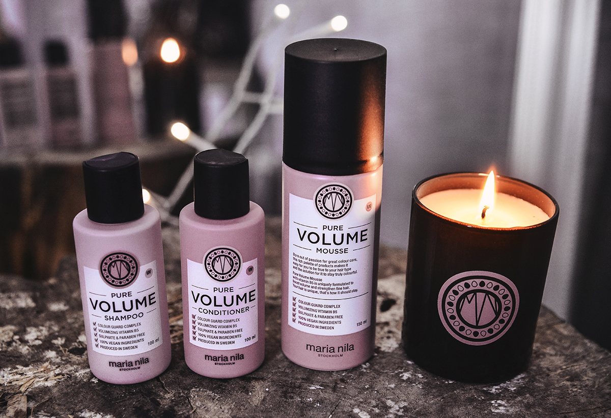

“We provide the world with friendly, sustainable beauty in a professional, conscious and playful way”
We live in a society where we have to take responsibility for animals, the environment and our future generations. Animals are a great part of our planet and they shouldn’t be plagued or exploited due to humanity’s vanity. Therefore, we see it as a matter of course to produce products with 100% vegan ingredients. We are certifid by The Vegan Society, PETA and Leaping Bunny, which all are global animal welfare organizations. Their logos are featured on our packaging and means that the consumer can be sure that our assortment is both animal friendly and vegan. I the future, we hope that all beauty products around the world will be vegan and environmentally friendly.
We are not the usual haircare brand. Our 100% vegan and cruelty free products are developed out of love for animals, as they should not be part of haircare products. By providing high quality vegan beauty, we make it easy for everyone to take a step towards a sustainable and friendlier world. By choosing Maria Nila, you choose cruelty free, climate friendly and colour protecting haircare produced in Sweden. Our chemists develop our products with carefully chosen ingredients that make a difference for clients, salons, animals and the environment. We have our own product development, production, filling and warehouse in our factory in Helsingborg, Sweden, and from here we ship all over the world. Our safety and quality checks in every step of the production chain assure that our products have the highest possible quality, in every single unit. By driving and controlling the entire process from concept to product, we are able to guarantee healthy working conditions and high quality formulas.
